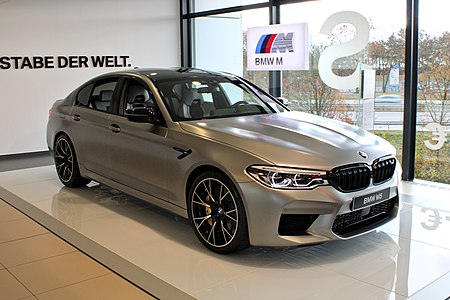

BMW M5 — BMW მე-5 სერიის მაღალი პერფორმანსის მქონე ვარიანტი, რომელსაც აწარმოებს BMW AG-ის ქვებრენდი BMW M. სპორტული სედანების კატეგორიაში კანონიკურ სატრანსპორტო საშუალებად მიიჩნევა.[1][2] M5-ის უმრავლესობა იწარმოებოდა როგორც სედანი, მაგრამ ზოგიერთ ქვეყანაში M5 ხელმისაწვდომი იყო აგრეთვე როგორც უნივერსალი 1992–1995 და 2006–2010 წლებში.[3][4] E28 535i შასითა და მოდიფიცირებული BMW M1-ის ძრავათი აღჭურვილი M5-ის პირველი ხელნაკეთი მოდელი ააწყვეს 1985 წელს, რომელიც იმ დროისათვის წარმოებულ სედანებს შორის უსწრაფესი გახდა.[5] 1985 წლიდან მოყოლებული M5-ის მოდელები იწარმოება ყოველი მე-5 სერიის თაობებისთვის და მის უსწრაფეს და უმძლავრეს ვარიანტად ითვლება. BMW E12-სა და BMW E28-ის ბაზაზე შექმნილი M535i-ის მოდელი განიხილება როგორც BMW M5-ის წინამორბედი. M535i (E12/1S) იყო BMW M GmbH-ის მიერ შექმნილი პირველი სპორტული სედანი. იგი წარმოდგენილი იყო 3.5 ლიტრიანი ექვსცილინდრიანი ძრავათი, რომელიც გამოიმუშავებდა 218 ცხენის ძალას. პირველ ყოვლისა, ეს მოდელი განკუთვნილი იყო ავტოსპორტისთვის. E28 სერიის ბაზაზე არსებობდა 1985 წელს წარმოდგენილი კიდევ ერთი M535i, რომელსაც M5-ის მოდელთან საერთო არაფერი ჰქონდა. E28 M5 (1985–1988) პირველი BMW M5-ის (რომელიც დაფუძნებული იყო E28 5 სერიის ბაზაზე) დებიუტი შედგა ამსტერდამის ავტოსალონში 1984 წლის თებერვალში. შეადგენდა ოთხკარებიან სედანის კატეგორიას, სპორტული ავტომობილის საერთო წარმოებით. იყენებდა 535i შასისა და მოდიფიცირებულ BMW M1-ის ძრავს. იწონიდა 1,550 კგ-ს. E28 M5 შემოღების მომენტიდან მსოფლიოს ყველაზე სწრაფ სედანად ითვლებოდა. გამოუშვეს ოთხ სხვადასხვა ვერსიაში. გამოდიოდა 1985–1988 წლებში. სულ გამოუშვეს 2,191 ცალი. საბოლოოდ E28 M5 შეცვალა E34 M5-მა. E34 M5 (1989–1995) BMW E34 M5 3.6 ლიტრიანი ძრავით პირველად წარადგინეს ფრანკფურტის ავტოსალონში 1988 წლის სექტემბერში. გამოიმუშავებს 311 ცხენის ძალას. 1991 წელს წარადგინეს იმავე მოდელი 3.8 ლიტრიანი ძრავით. М5 E34 ყველა მოდელს აწყობდნენ გერმანიის პატარა ქალაქ გარჰინგში. გამოიმუშავებს 340 ცხენის ძალას. საბოლოოდ BMW E34 M5 შეცვალა E39 M5-მა. E39 M5 (1998–2003) BMW E39 M5 წარმოდგენილი იქნა 1998 წელს ჟენევის ავტოსალონში. წინამორბედებისაგან განსხვავებით, E39 M5 ააწყვეს ჩვეულებრივ საწარმოო ხაზზე გერმანიის ქალაქ დინგოლფინგის ქარხანაში. აღჭურვილია 4.9 ლიტრიანი V8 BMW S62 ძრავით. გამოიმუშავებს 400 ცხენის ძალას. საბოლოოდ, E39 M5 შეცვალა E60 M5-მა. E60 M5 (2005–2010) BMW E60 M5-ის წარმოება დაიწყო 2005 წლიდან. აღჭურვილია 5.0 ლიტრიანი V10 BMW S85B50 ძრავით. გამოიმუშავებს 507 ცხენის ძალას. M5 E60-ს აქვს 7 სიჩქარიანი SMGIII გადაცემათა კოლოფი და მხოლოდ ამერიკისთვის იწარმოებოდა 6 სიჩქარიანი მექანიკური გადაცემათა კოლოფით. ააწყვეს გერმანიის ქალაქ დინგოლფინგში. ამ მოდელის წარმოება გაგრძელდა 2010 წლამდე, როდესაც იგი შეცვალა F10 M5-მა. F10 M5 (2011–2016) BMW F10 M5 წარმოდგენილი იქნა ფრანკფურტის ავტოსალონში 2011 წელს. ააწყვეს გერმანიის ქალაქ დინგოლფინგში. აღჭურვილია 4.4 ლიტრიანი V8 ძრავით. F90 M5 (2017–2023) BMW F90 M5 შეიქმნა BMW M5 G30-ის ბაზაზე და პირველად საჯაროდ გამოჩნდა ფრანკფურტის ავტოსალონზე 2017 წლის სექტემბერში. BMW F90 M5-ის აჩქაქრება 0-დან 100 (კმ/სთ) კილომეტრამდე საათში სრულიად გაჩერებული მგომარეობიდან შეადგენს 3.4 წამს, ხოლო 0-დან 200 (კმ/სთ) კილომეტრამდე საათში 11.1 წამს. რეკორდები BMW F90 M5 არის ორი გინესის რეკორდის მფლობელი: უწყვეტი დრიფთი ავტომობილით, რომელიც შეადგენს 374.17 კილომეტრს, რითაც მან დაამსხვრია წინამორბედი რეკორდი, რომელიც შეადგენდა 144.126 კილომეტრს და წყვილში დრიფტი ორი ავტომობილით, რომელიც შეადგენს 79.26 კილომეტრს.
